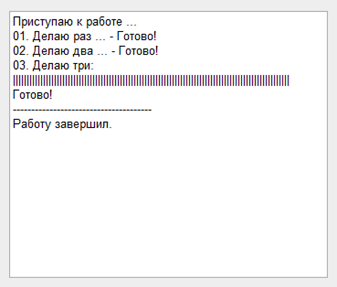

Текстовое Поле (TextBox) - Отображение информации (отчёта) о проделанной работе
Часто приходиться проделывать "длинные" оперециии с даннымми:
- Сначала импортировать (подключать)
- Потом, обрабатывать и модифицировать
- Затем импортировать с согласованием ...
- и т.д.
(Бывало на 7 - 14 минут ...)
Вот для информативности, и что бы клиент понимал что происходит, пишу ЭТУ статью.
Осталось только между:
NewStringToTextBox Me!txtReport, "Приступаю к работе ..." 'Первая строка
... написать промедуточные процедуры с отчётом ...
Пример использования (пишем в Me!txtReport):
Private Sub cmd01_Click()
Dim i As Integer
'Отменяем автокоррекцию данных в поле отчёта
Me!txtReport.AllowAutoCorrect = False
NewStringToTextBox Me!txtReport, "Приступаю к работе ..." 'Первая строка
NewStringToTextBox Me!txtReport, "01. Делаю раз ... ", True 'Вторая строка (с новой строки)
NewStringToTextBox Me!txtReport, " - Готово!"
NewStringToTextBox Me!txtReport, "02. Делаю два ... ", True
NewStringToTextBox Me!txtReport, " - Готово!"
NewStringToTextBox Me!txtReport, "03. Делаю три: ", True
'Начало "Псевдо ProgressBar-a" (с новой строки)
NewStringToTextBox Me!txtReport, "|", True
'Продолжение "Псевдо ProgressBar-a" (100 "палок")
For i = 1 To 100
'Некие действия ....
NewStringToTextBox Me!txtReport, "|"
Next i
NewStringToTextBox Me!txtReport, "Готово!", True
NewStringToTextBox Me!txtReport, "--------------------------------------", True
NewStringToTextBox Me!txtReport, "Работу завершил.", True
'Перевод фокуса на кнопку выхода
Me!cmdClose.SetFocus
End Sub
Напишет ЭТО:

Собственно процедура:
Public Sub NewStringToTextBox(objTextBox As TextBox, strText As Variant, Optional bolInNewString As Boolean = False)
'es - 10.03.2013
'Вывод строк в мультистрочный TextBox
'Аргументы:
' objTextBox : TextBox
' strText : Добавляемый Текст
' bolInNewString : Текст должн быть с новой строки
'--------------------------------------------------------------------
Dim strTemp As String
Dim strAll As String
Dim l As Long
'--------------------------------------------------------------------
On Error GoTo NewStringToTextBoxErr
If bolInNewString = False Then
strTemp = strText
Else
strTemp = vbCrLf & strText
End If
objTextBox.SetFocus
strAll = objTextBox.Value & strTemp
l = Len(strAll)
objTextBox.Value = strAll
objTextBox.SelStart = l
objTextBox.SelLength = 0
DoEvents
NewStringToTextBoxBye:
Exit Sub
NewStringToTextBoxErr:
MsgBox "Error " & Err.Number & vbCrLf & Err.Description & vbCrLf & _
"in procedure NewStringToTextBox", vbCritical, "Error!"
Resume NewStringToTextBoxBye
End Sub